Nintendo Extras

Nintendo Cursors
Archived from an old version of totallyfreecursors.com. (repairs made when needed)
 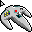
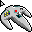
DOWNLOAD
 3 .ani (Windows Animated Cursor) files zipped (2.79 KB)
3 .ani (Windows Animated Cursor) files zipped (2.79 KB)
Nintendo Desktop Icons
Archived from an old version of Nintendo of Norway's website (nintendo.no).
 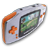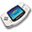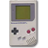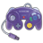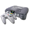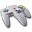
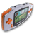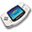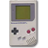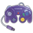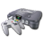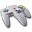
 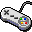
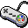
DOWNLOAD
10 .ico (Windows Icon) files zipped (62.6 KB)